Atividades
Negativo
Quadrantes
Contagem de objetos
Equalização de histogramas
Detecção de movimentos
Filtragem no domínio espacial
Tilt-shift
Negativo
A primeira atividade da disciplina consiste em inverter as cores de uma imagem. Para realizar esta atividade, é necessário primeiro entender que em imagens digitais representadas em uma matriz de cores RGB, há 3 canais (vermelho, verde e azul), e todas as outras cores são representadas por um conjunto destas 3.
Embora existam diversos padrões e quantidades diferentes de bits por canal possam ser usadas dependendo da aplicação e de quanta precisão ou alcance seja necessário, imagens digitais em sua grande maioria possuem canais de 8 bits onde cada canal pode assumir qualquer valor inteiro entre 0 e 255, totalizando 24 bits por pixel ou 16777216 possíveis cores distintas.
O branco é representado por uma combinação dos 3 canais de cores em seus níveis máximos (255, 255, 255), ou #FFFFFF, e sabemos que o "negativo" de uma cor é o resultado da diferença entre o branco e a própria cor. Podemos então simplesmente fazer uma simples subtração para conseguir o negativo de uma imagem, ou melhor ainda, uma operação lógica NOT com os bits que representam os 3 canais de cores.
Abaixo vemos a nossa imagem inicial:
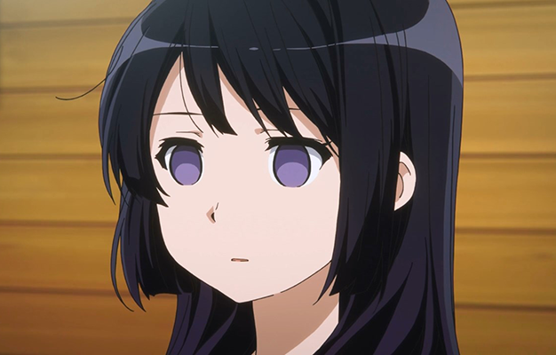
O seguinte programa pergunta ao usuário as coordenadas que o mesmo deseja inverter, e então mostra a imagem resultante com a área invertida:
#include <opencv2/opencv.hpp>
#include <iostream>
using namespace std;
using namespace cv;
int main(int argc, char** argv) {
Mat img = imread(argv[1]);
if (!img.data) {
cout << "imagem nao carregou corretamente" << endl;
return(-1);
}
Mat img_out = Mat::zeros(img.rows, img.cols, CV_8UC3);
int pos_xi, pos_yi, pos_xf, pos_yf;
cout << "digite o pixel x inicial:" << endl;
cin >> pos_xi;
cout << "digite o pixel y inicial:" << endl;
cin >> pos_yi;
cout << "digite o pixel x final:" << endl;
cin >> pos_xf;
cout << "digite o pixel y final:" << endl;
cin >> pos_yf;
namedWindow("janela", WINDOW_AUTOSIZE);
imshow("janela", img);
waitKey();
for (int i = 0; i < img.rows; i++) {
for (int j = 0; j < img.cols; j++) {
if (i > pos_xi && i < pos_xf && j > pos_yi && j < pos_yf) {
bitwise_not(img.at(i, j), img_out.at(i, j));
}
else {
img_out.at(i, j) = img.at(i, j);
}
}
}
imshow("janela", img);
namedWindow("janelaout", WINDOW_AUTOSIZE);
imshow("janelaout", img_out);
waitKey();
return 0;
}
inverse.cpp
Abaixo podemos ver a imagem resultante:
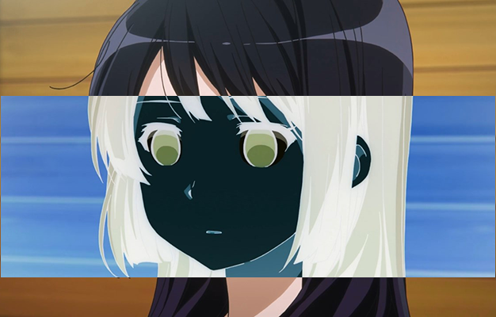
Quadrantes
A segunda atividade da disciplina consistem em inverter os quadrantes de uma imagem. Podemos entender que qualquer imagem digital pode ser dividida em 4 quadrantes onde cada um deles forma uma sub-matriz com 1/4 da informação da imagem.
Abaixo podemos ver a configuração dos quadrantes na imagem original:
A inversão dos quadrantes, como pedida, deve ser feita da seguinte forma:
O programa que realiza a inversão dos quandrantes é o seguinte:
#include <opencv2/opencv.hpp>
#include <iostream>
using namespace std;
using namespace cv;
int main(int argc, char** argv) {
Mat img = imread(argv[1]);
if (!img.data) {
cout << "imagem nao carregou corretamente" << endl;
return(-1);
}
Mat img_out = Mat::zeros(img.rows, img.cols, CV_8UC3);
namedWindow("janela", WINDOW_AUTOSIZE);
imshow("janela", img);
waitKey();
for (int i = 0; i < img.rows; i++) {
for (int j = 0; j < img.cols; j++) {
if (i < img.rows / 2 && j < img.cols / 2) {
img_out.at(i + img.rows / 2, j + img.cols / 2) = img.at(i, j);
}
else if (i < img.rows / 2 && j > img.cols / 2) {
img_out.at(i + img.rows / 2, j - img.cols / 2) = img.at(i, j);
}
else if (i > img.rows / 2 && j < img.cols / 2) {
img_out.at(i - img.rows / 2, j + img.cols / 2) = img.at(i, j);
}
else if (i > img.rows / 2 && j > img.cols / 2) {
img_out.at(i - img.rows / 2, j - img.cols / 2) = img.at(i, j);
}
}
}
imshow("janela", img);
namedWindow("janelaout", WINDOW_AUTOSIZE);
imshow("janelaout", img_out);
waitKey();
return 0;
}
quadrants.cpp
Abaixo podemos ver a imagem original:
E abaixo, a imagem após ser processada pelo programa:
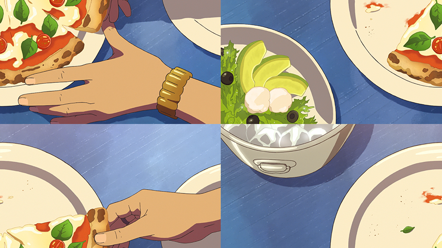
Contagem de objetos
A próxima tarefa consiste em uma contagem de objetos, sendo importante diferenciar os objetos com bolhas e os objetos sem bolhas na cena.
Abaixo podemos ver a imagem a ser processada:
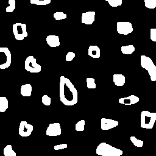
O programa funciona de maneira relativamente simples, primeiramente todos os objetos que se encontram nas bordas são deletados da cena. Após isto, o fundo é pintado de uma cor que o identifique como fundo, diferente da cor das "bolhas", ou dos "buracos" como são chamados no código. Em seguida, o programa irá procurar por pixeis brancos e então utulizar a posição do mesmo como seed de um algoritmo que "pinta" todo o aglomerado de pixeis brancos em sua redondeza de uma cor, cor que é incrementada cada vez que o mesmo encontra novo aglomerado de pixeis brancos.
Após isto, o programa irá procurar por buracos, checar a cor do pixel logo imediatamente a esquerda do primeiro pixel encontrado pertencente ao buraco, e caso esta já não tenha sido encontrada, incrementar o número de objetos com bolhas/buracos.
Isto precisa ser feito para que um objeto com mais de um buraco não seja detectado como mais de um objeto.
A seguir o código fonte deste programa:
#include <opencv2/opencv.hpp>
#include <iostream>
using namespace std;
using namespace cv;
int main(int argc, char** argv) {
Mat image = imread(argv[1], CV_LOAD_IMAGE_GRAYSCALE);
if (!image.data) {
cout << "imagem nao carregou corretamente" << endl;
return(-1);
}
long int obj_total = 0;
long int obj_with_holes = 0;
long int obj_found_colour = 2;
long int obj_colour_aux = 0;
CvPoint p;
namedWindow("Labelling", CV_WINDOW_KEEPRATIO);
imshow("Labelling", image);
waitKey();
for (int i = 0; i < image.rows; i++) {
for (int j = 0; j < image.cols; j++) {
if (i == 0 || j == 0 || i == image.rows - 1 || j == image.cols - 1) {
image.at(i, j) = 255;
}
}
}
p.x = 0; p.y = 0;
floodFill(image, p, 0); //Retirada das bolhas que tocam as bordas
imshow("Labelling", image);
waitKey();
floodFill(image, p, 1); //Mudança do valor da cor de fundo
imshow("Labelling", image);
waitKey();
for (int i = 0; i < image.rows; i++) { //Marca todos os objetos como sem bolha
for (int j = 0; j < image.cols; j++) {
if (image.at(i, j) == 255) {
obj_total++; //Achou algo
p.x = j;
p.y = i;
floodFill(image, p, obj_found_colour);
obj_found_colour++;
}
}
}
imshow("Labelling", image);
waitKey();
for (int x = 0; x < image.rows; x++) { //Fazer uma busca dos objetos com buracos
for (int y = 0; y < image.cols; y++) {
if (image.at(x, y) == 0 && image.at(x, y - 1) != obj_colour_aux) {
obj_colour_aux = image.at(x, y - 1);
p.x = y;
p.y = x;
floodFill(image, p, obj_colour_aux);
obj_with_holes++;
}
else if (image.at(x, y) == 0 && image.at(x, y - 1) == obj_colour_aux) {
p.x = y;
p.y = x;
floodFill(image, p, obj_colour_aux);
}
}
}
imshow("Labelling", image);
waitKey();
imwrite("labeling.png", image);
cout << "Number of elements without holes: " << obj_total - obj_with_holes << endl;
cout << "Number of elements with holes: " << obj_with_holes << endl;
waitKey();
return 0;
}
counting.cpp
Seguindo a lógica do programa, logo após deletarmos todos os elementos que encostam na borda, temos a seguinte imagem:
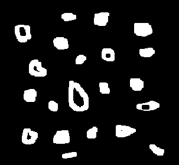
Então, contamos a quantidade total de objetos incrementando a cor com que estes são pintados na cena:
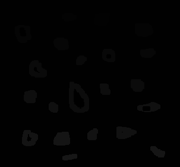
E então, contamos as bolhas levando em consideração a cor de seu objeto para que não haja equívoco na quantidade de objetos com bolhas:
E então podemos ver o resultado do programa na saída do terminal:
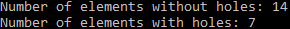
Para averiguar que o programa de fato funcionaria para uma imagem com objetos que contém mais de uma bolha, editei a imagem original e incluí um objeto com 2 bolhas:
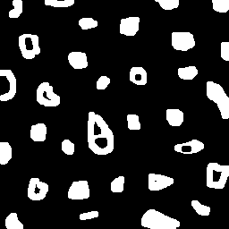
A seguir, a mesma sequência de imagens já explanada. Primeiro os objetos são contados e depois os objetos com bolhas são identificados:

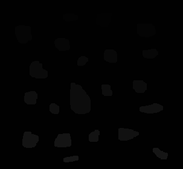
E logo a seguir, a saída de texto no terminal:
Equalização de histogramas
Esta tarefa consiste em uma equalização dos níveis de cinza de uma imagem, isto é, dar a esta imagem o maior nível de contraste possível utilizando os níveis já existentes da mesma como entrada de uma função.
Abaixo podemos ver a imagem original utilizada:
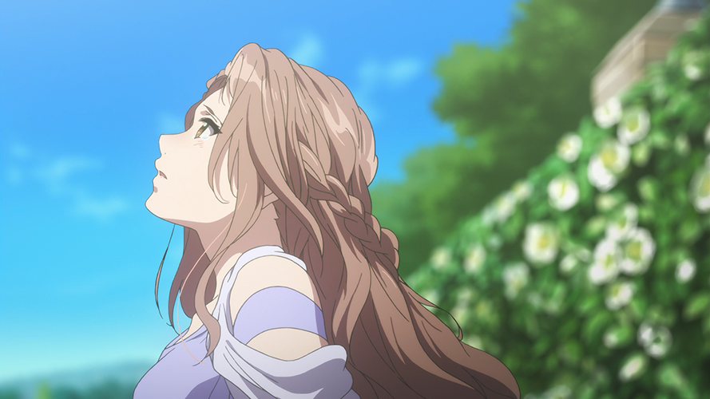
Como queremos fazer uma equalização em tons de cinza, temos que carregar a imagem como uma imagem em greyscale utilizando o próprio OpenCV. Abaixo podemos ver a imagem em tons de cinza:
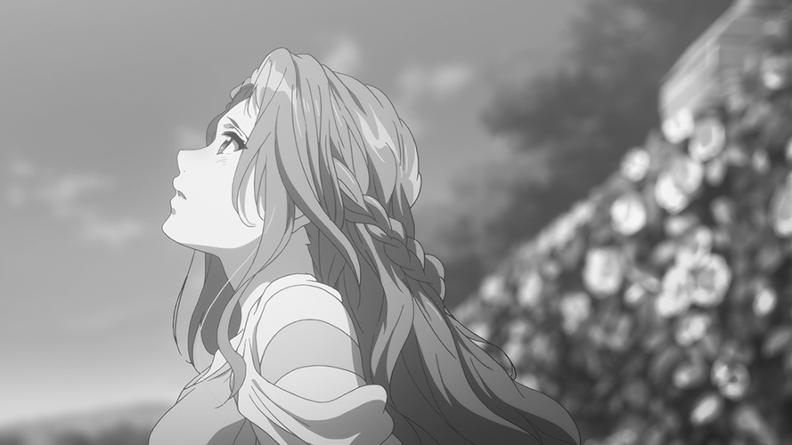
Nosso objetivo é equalizar os tons de cinza da imagem, e mostrar na tela o histograma representativo da mesma. Segue abaixo o código do programa que mostra o histograma da imagem original, a equaliza, e também mostra o novo histograma da imagem de saída equalizada:
#include <opencv2/opencv.hpp>
#include <iostream>
using namespace cv;
using namespace std;
int main(int argc, char** argv) {
Mat img, img_eql, hist, hist_eql;
img = imread(argv[1], CV_LOAD_IMAGE_GRAYSCALE);
equalizeHist(img, img_eql);
bool uniform = true;
bool acummulate = false;
int nbins = 128;
float range[] = { 0, 256 };
const float *histrange = { range };
int width = img.cols;
int height = img.rows;
int histw = nbins, histh = nbins / 4;
Mat hist_img(histh, histw, CV_8UC1, Scalar(0, 0, 0));
Mat hist_img_eql(histh, histw, CV_8UC1, Scalar(0, 0, 0));
calcHist(&img, 1, 0, Mat(), hist, 1, &nbins, &histrange, uniform, acummulate);
calcHist(&img_eql, 1, 0, Mat(), hist_eql, 1, &nbins, &histrange, uniform, acummulate);
normalize(hist, hist, 0, hist_img.rows, NORM_MINMAX, -1, Mat());
normalize(hist_eql, hist_eql, 0, hist_img.rows, NORM_MINMAX, -1, Mat());
hist_img.setTo(Scalar(0));
hist_img_eql.setTo(Scalar(0));
for (int i = 0; i<nbins; i++) {
line(hist_img, Point(i, histh), Point(i, cvRound(hist.at<float>(i))), Scalar(255, 255, 255), 1, 8, 0);
}
for (int i = 0; i<nbins; i++) {
line(hist_img_eql, Point(i, histh), Point(i, cvRound(hist_eql.at<float>(i))), Scalar(255, 255, 255), 1, 8, 0);
}
hist_img.copyTo(img(Rect(10, 10, nbins, histh)));
hist_img_eql.copyTo(img_eql(Rect(10, 10, nbins, histh)));
namedWindow("Original", WINDOW_AUTOSIZE);
namedWindow("Equalised", WINDOW_AUTOSIZE);
imshow("Original", img);
imshow("Equalised", img_eql);
waitKey();
return 0;
}
equalise.cpp
Abaixo podemos ver o primeiro plot do programa, o plot da imagem original em tons de cinza com seu histograma no lado superior esquerdo:
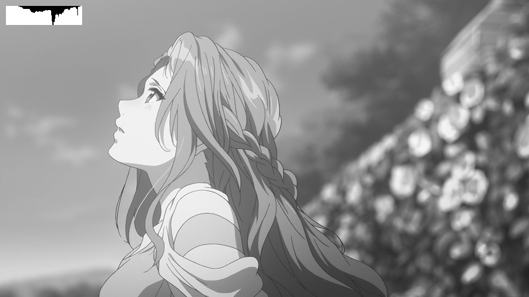
E abaixo podemos ver o mesmo plot, porém da imagem equalizada:
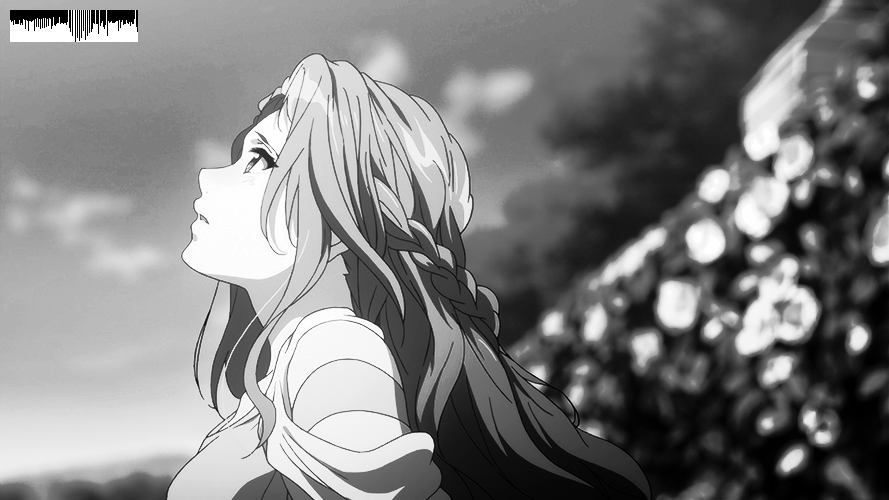
É importante notar que o histograma plotado têm sua origem no canto superior esquerdo da imagem. Seu eixo de intensidade de valores vai deste ponto e cresce para baixo, enquanto o eixo que representa diferentes valores cresce da esquerda para a direita. É o mesmo sistema de coordenadas utilizado pelas matrizes do OpenCV. No histograma, o fundo é branco. E o histograma plotado em cima deste fundo branco possui cor preta.
Uma deficiência do código acima é que ele é feito para ser utilizados com imagens, entretando poderíamos muito bem fazer uma adaptação simples para que o mesmo seja utilizado com cameras ou vídeos.
No exemplo abaixo, foi utilizado um vídeo para demonstração pois não possuo uma webcam que posso utilizar para testes. Para utilizar com uma camera basta trocar "argv[1]" em "VideoCapture cap()" para "0" de forma com que fique VideoCapture cap(0).
#include <opencv2/opencv.hpp>
#include <iostream>
using namespace cv;
using namespace std;
int main(int argc, char** argv) {
Mat img, img_eql, hist, hist_eql;
VideoCapture cap(argv[1]);
while (true) {
cap >> img;
cvtColor(img, img, CV_BGR2GRAY);
equalizeHist(img, img_eql);
bool uniform = true;
bool acummulate = false;
int nbins = 128;
float range[] = { 0, 256 };
const float *histrange = { range };
int width = img.cols;
int height = img.rows;
int histw = nbins, histh = nbins / 4;
Mat hist_img(histh, histw, CV_8UC1, Scalar(0, 0, 0));
Mat hist_img_eql(histh, histw, CV_8UC1, Scalar(0, 0, 0));
calcHist(&img, 1, 0, Mat(), hist, 1, &nbins, &histrange, uniform, acummulate);
calcHist(&img_eql, 1, 0, Mat(), hist_eql, 1, &nbins, &histrange, uniform, acummulate);
normalize(hist, hist, 0, hist_img.rows, NORM_MINMAX, -1, Mat());
normalize(hist_eql, hist_eql, 0, hist_img.rows, NORM_MINMAX, -1, Mat());
hist_img.setTo(Scalar(0));
hist_img_eql.setTo(Scalar(0));
for (int i = 0; i<nbins; i++) {
line(hist_img, Point(i, histh), Point(i, cvRound(hist.at<float>(i))), Scalar(255, 255, 255), 1, 8, 0);
}
for (int i = 0; i<nbins; i++) {
line(hist_img_eql, Point(i, histh), Point(i, cvRound(hist_eql.at<float>(i))), Scalar(255, 255, 255), 1, 8, 0);
}
hist_img.copyTo(img(Rect(10, 10, nbins, histh)));
hist_img_eql.copyTo(img_eql(Rect(10, 10, nbins, histh)));
namedWindow("Original", WINDOW_AUTOSIZE);
namedWindow("Equalised", WINDOW_AUTOSIZE);
imshow("Original", img);
imshow("Equalised", img_eql);
if (waitKey(30) >= 0) break;
}
return 0;
}
equalise_video.cpp
Abaixo um vídeo para demonstrar o funcionamento do programa:
Detecção de movimentos
Como já sabemos, uma imagem nada mais é do que uma matriz de píxeis que podem assumir valores diferentes. Um vídeo por sua vez, nada mais é que um array temporal de imagens onde os valores dos píxeis são atualizados a cada frame.
Nosso objetivo é fazer uma detecção de movimentos, e como sabemos que um vídeo é composto por uma série de frames podemos comparar estes frames e decidir se houve ou não um movimento. A comparação implementada no algorítmo é simples, ela simplesmente faz um somatório do módulo da subtração entre os valores de todos os píxeis do frame atual e seus respectivos valores no frame imediatamente passado.
O programa também mostra na tela a diferença entre o frame atual e o passado, como forma de vídeo. Valores próximos do preto significam que não houve mudança significativa nos valores deste píxel entre o frame passado e o frame atual, e valores próximos do branco significam que a diferença entre eles foi muito significativa.
A conclusão é que, na diferença entre o frame atual e o frame imediatamente passado, valores próximos do preto significam que não houve movimentos significativos no vídeo. E valores próximos do branco significam que de fato houve movimento significativo no vídeo.
Abaixo a implementação do algoritmo:
#include <opencv2/opencv.hpp>
#include <iostream>
using namespace cv;
using namespace std;
int main(int argc, char** argv) {
long frame_counter = 0, difference_total_value = 0;
Mat frame, frame_past, difference;
VideoCapture cap(argv[1]);
int width = cap.get(CV_CAP_PROP_FRAME_WIDTH);
int height = cap.get(CV_CAP_PROP_FRAME_HEIGHT);
difference = Mat::zeros(height, width, CV_8UC1);
while (true) {
cap >> frame;
cvtColor(frame, frame, CV_BGR2GRAY);
difference_total_value = 0;
for (int i = 0; i < frame.rows; i++) {
for (int j = 0; j < frame.cols; j++) {
if (frame_counter == 0) {
difference.at<uchar>(i, j) = 0;
} else {
difference.at<uchar>(i, j) = abs(frame.at<uchar>(i, j) - frame_past.at<uchar>(i, j));
}
difference_total_value += difference.at<uchar>(i, j);
}
}
frame_past = frame;
frame_counter++;
cout << "frame: " << frame_counter << " difference = " << difference_total_value << endl;
if (difference_total_value > 150000) {
cout << "THERE'S MOVEMENT!" << endl;
}
namedWindow("Difference", WINDOW_AUTOSIZE);
imshow("Difference", difference);
if (waitKey(30) >= 0) break;
}
return 0;
}
movement.cpp
Para nós, a parte mais importante do código a ser entendida é a parte em que ele calcula a diferença entre os frames e gera uma imagem representando esta diferença. No código, existe um loop que varre todos os píxeis do frame e caso o frame_counter (contador de frames) esteja em 0, ele simplesmente atribui 0 ao valor da diferença pois nós não possuímos nenhum frame passado ainda e estamos em nossa primeira iteração. Caso frame_counter seja maior do que 0, o código procede fazendo um módulo da subtração entre os valores atual e passado de um píxel, e o resultado é guardado na matrix de diferença. Ao término do calculo da diferença de cada píxel, esse valor é somado ao montante da diferença que literalmente é um somatório de todas as diferenças.
Abaixo podemos ver a seção de código explicada acima:
difference_total_value = 0;
for (int i = 0; i < frame.rows; i++) {
for (int j = 0; j < frame.cols; j++) {
if (frame_counter == 0) {
difference.at(i, j) = 0;
} else {
difference.at(i, j) = abs(frame.at(i, j) - frame_past.at(i, j));
}
difference_total_value += difference.at(i, j);
}
}
E abaixo um exemplo do terminal de fato mostrando que houve movimento:
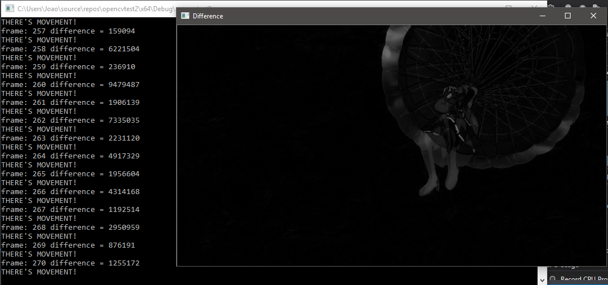
Na imagem acima vemos uma paraquedista, o fundo da imagem (o céu) basicamente se mantêm constante e logo é mostrado como preto. A paraquedista, que está se movendo na imagem, aparece em tons de cinza mais claros.
Rodando o algoritmo com um vídeo como sua entrada podemos ver o funcionamento do mesmo. Neste exemplo o threshold utilizado entre a falta de movimento e a existência do mesmo foi de um somatório total de 150000.
O programa mostra no terminal o número do frame atual e o valor da diferença total entre ele e o frame passado, e avisa que houve um movimento quando essa diferença ultrapassa 150000. Na janela do vídeo, vemos valores escuros próximos do preto quando não há uma diferença significativa entre o frame atual e o frame passado naquela posição, e valores mais claros (mais próximos do branco) significam que houve uma diferença de valor naquela posição entre o frame atual e o frame passado. Valores que não são próximos do preto significam que houve movimento no vídeo.
Filtragem no domínio espacial
Para efetuarmos a filtragem no domínio espacial, utilizamos-se de uma propriedade da convolução que nos diz que uma convolução no domínio do tempo (no nosso caso, no domínio espacial pois possuímos 2 eixos e valores que variam no plano formado por eles) equivale á multiplicação no domínio da frequência e dessa forma conseguimos fazer a filtragem sem necessariamente trabalhar diretamente no domínio da frequência.
O programa, por definição da atividade, deve alternar entre diferentes filtros dependendo da tecla pressionada pelo usuário. Baseiando-se no programa filtroespacial.cpp, o objetiro é de adicionar a opção de se fazer uma filtragem com o filtro laplaciano após primeiramente fazer uma filtragem com o filtro gaussiano.
Abaixo podemos ver o código do programa:
#include <opencv2/opencv.hpp>
#include <iostream>
using namespace cv;
using namespace std;
void printmask(Mat &m) {
for (int i = 0; i<m.rows; i++) {
for (int j = 0; j<m.cols; j++) {
cout << m.at<float>(i, j) << ",";
}
cout << endl;
}
}
void menu() {
cout << "\npressione a tecla para ativar o filtro: \n"
"a - calcular modulo\n"
"m - media\n"
"g - gauss\n"
"v - vertical\n"
"h - horizontal\n"
"l - laplaciano\n"
"esc - sair\n";
}
int main(int argvc, char** argv) {
VideoCapture video(argv[1]); //use this for videos
//cap = imread(argv[1]); //use this for images
float media[] = { 1,1,1,1,1,1,1,1,1 };
float gauss[] = { 1,2,1,2,4,2,1,2,1 };
float horizontal[] = { -1,0,1,-2,0,2,-1,0,1 };
float vertical[] = { -1,-2,-1,0,0,0,1,2,1 };
float laplacian[] = { 0,-1,0,-1,4,-1,0,-1,0 };
Mat cap, frame, frame32f, frameFiltered, frameFiltered2;
Mat mask(3, 3, CV_32F), mask_gauss(3, 3, CV_32F), mask_lap(3, 3, CV_32F);
Mat result, result1, result_lapgauss;
double width, height, min, max;
bool lap_gauss_aux = false, absolut = true;
char key;
width = video.get(CV_CAP_PROP_FRAME_WIDTH); //use this for videos
height = video.get(CV_CAP_PROP_FRAME_HEIGHT); //use this for videos
//width = cap.cols; //use this for images
//height = cap.rows; //use this for images
std::cout << "width = " << width << "\n";;
std::cout << "height = " << height << "\n";;
namedWindow("spacialfilter", 1);
mask_gauss = Mat(3, 3, CV_32F, gauss);
scaleAdd(mask_gauss, 1 / 16.0, Mat::zeros(3, 3, CV_32F), mask_gauss);
mask_lap = Mat(3, 3, CV_32F, laplacian);
mask = Mat(3, 3, CV_32F, media);
scaleAdd(mask, 1 / 9.0, Mat::zeros(3, 3, CV_32F), mask);
swap(mask, mask);
menu();
while (true) {
video >> cap; //comment this when using images as input
cvtColor(cap, frame, CV_BGR2GRAY);
imshow("original", frame);
frame.convertTo(frame32f, CV_32F);
key = (char)waitKey(10);
if (lap_gauss_aux) {
filter2D(frame32f, frameFiltered, frame32f.depth(), mask_gauss, Point(1, 1), 0);
filter2D(frameFiltered, frameFiltered2, frameFiltered.depth(), mask_lap, Point(1, 1), 0);
frameFiltered2 = abs(frameFiltered2);
frameFiltered2.convertTo(result_lapgauss, CV_8U);
imshow("spacialfilter", result_lapgauss);
} else {
filter2D(frame32f, frameFiltered, frame32f.depth(), mask, Point(1, 1), 0);
if (absolut) {
frameFiltered = abs(frameFiltered);
}
frameFiltered.convertTo(result, CV_8U);
imshow("spacialfilter", result);
}
if (key == 27) break; // esc pressed!
switch (key) {
case 'a':
menu();
absolut = !absolut;
lap_gauss_aux = false;
break;
case 'm':
menu();
mask = Mat(3, 3, CV_32F, media);
scaleAdd(mask, 1 / 9.0, Mat::zeros(3, 3, CV_32F), mask);
printmask(mask);
lap_gauss_aux = false;
break;
case 'g':
menu();
mask = mask_gauss;
printmask(mask_gauss);
lap_gauss_aux = false;
break;
case 'h':
menu();
mask = Mat(3, 3, CV_32F, horizontal);
printmask(mask);
lap_gauss_aux = false;
break;
case 'v':
menu();
mask = Mat(3, 3, CV_32F, vertical);
printmask(mask);
lap_gauss_aux = false;
break;
case 'l':
menu();
mask = Mat(3, 3, CV_32F, laplacian);
printmask(mask);
lap_gauss_aux = false;
break;
case 'q':
lap_gauss_aux = true;
break;
default:
break;
}
}
return 0;
}
spacialfilters.cpp
O programa pode ser usado para imagens ou vídeos, a partir de poucas alterações já sinalizadas no próprio código. Abaixo podemos ver a imagem utilizada para demonstração:
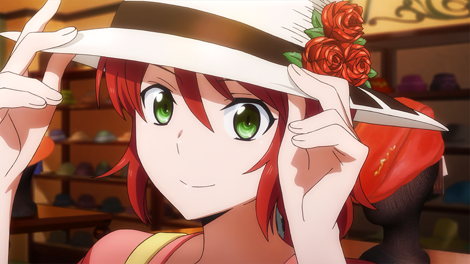
O programa trabalha em um espaço de cores de tons de cinza, então a entrada deve ser convertida para tons de cinza caso a mesma possua cores:
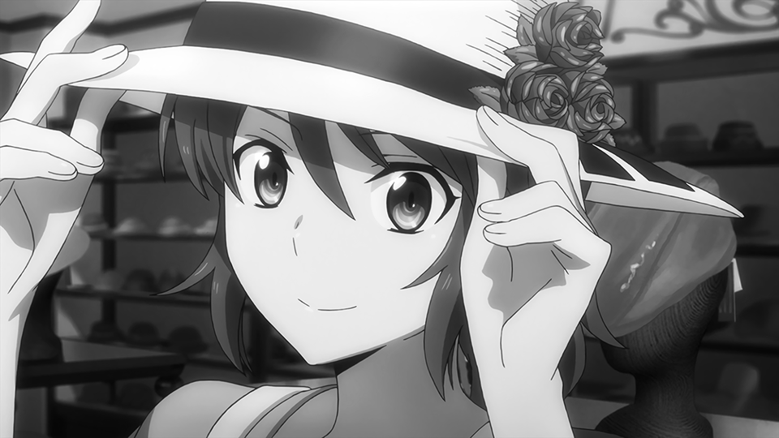
A partir da tecla pressionada, o programa irá mostrar na tela o resultado de diferentes filtragens. As opções disponíveis são:
Abaixo podemos ver nossos resultados:
Modulo:
Media:
Gauss:
Vertical:
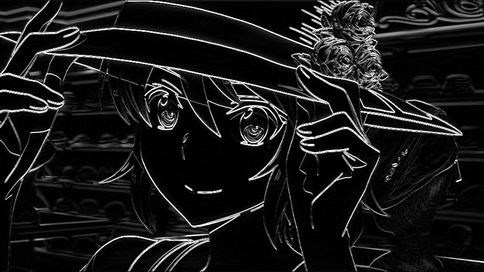
Horizontal:
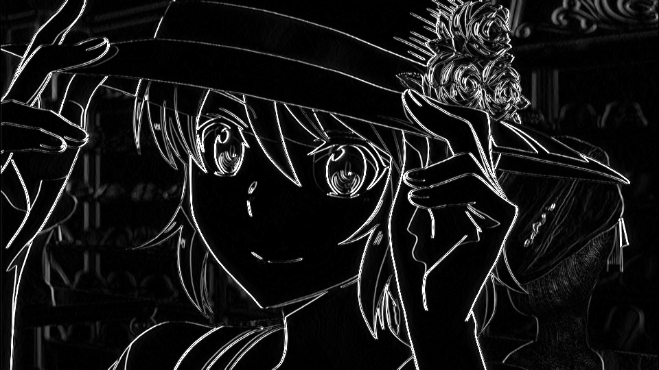
Laplaciano:
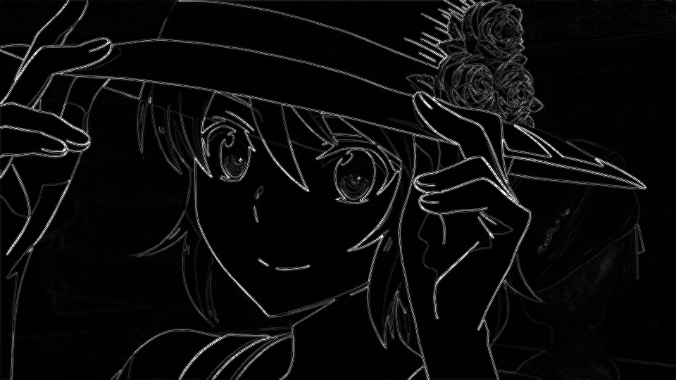
Gauss + laplaciano:
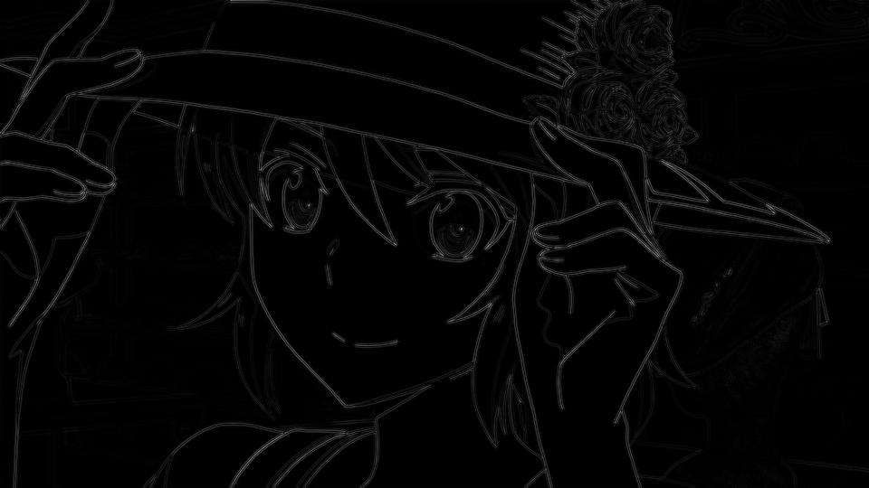
Podemos ver que, a inserção de uma pré-filtragem gaussiana antes de se aplicar a filtragem laplaciana resultou num resultado mais limpo e mais suave quando comparado ao resultado da filtragem apenas com a máscara laplaciana. Isso se dá pois o gaussiano funciona como um filtro de borramento ponderado.
Tilt-shift
Nesta seção, faremo um efeito de foco na imagem gerando um resultado similar ou de como se estiversimos utilizando lentes focais especiais em fotografias ou gravações.
Abaixo o código do programa:
#include <iostream>
#include <opencv2/opencv.hpp>
#include <math.h>
using namespace cv;
using namespace std;
int main(int argvc, char** argv) {
Mat img_in = imread(argv[1]);
Mat img_blurred = Mat::zeros(img_in.rows, img_in.cols, CV_32FC3);
Mat img_out = Mat::zeros(img_in.rows, img_in.cols, CV_32FC3);
Mat img_focused = Mat::zeros(img_in.rows, img_in.cols, CV_32FC3);
Mat img_unfocused = Mat::zeros(img_in.rows, img_in.cols, CV_32FC3);
Mat mask_focus = Mat(img_in.rows, img_in.cols, CV_32FC3, Scalar(0, 0, 0));
Mat mask_unfocus = Mat(img_in.rows, img_in.cols, CV_32FC3, Scalar(1, 1, 1));
imshow("input", img_in);
waitKey();
float unfocus_aux = 0.35; //Edit this to change how much of the original image will stay focused
int pos_i = unfocus_aux*img_in.rows;
int pos_f = img_in.rows - unfocus_aux*img_in.rows;
int decay = 60; //Edit this to change how fast it'll decay
Vec3f mask_function_value;
for (int i = 0; i < img_in.rows; i++) {
for (int j = 0; j < img_in.cols; j++) {
mask_function_value[0] = (tanh((float(i - pos_i) / decay)) - tanh((float(i - pos_f) / decay))) / 2;
mask_function_value[1] = (tanh((float(i - pos_i) / decay)) - tanh((float(i - pos_f) / decay))) / 2;
mask_function_value[2] = (tanh((float(i - pos_i) / decay)) - tanh((float(i - pos_f) / decay))) / 2;
mask_focus.at<Vec3f>(i, j) = mask_function_value;
}
}
mask_unfocus = mask_unfocus - mask_focus;
//This section shows the masks
imshow("focus mask", mask_focus);
imshow("unfocus mask", mask_unfocus);
waitKey();
img_in.convertTo(img_in, CV_32FC3);
GaussianBlur(img_in, img_blurred, Size(7, 7), 0, 0);
img_focused = img_in.mul(mask_focus);
img_unfocused = img_blurred.mul(mask_unfocus);
//This section only shows the blurred image
img_blurred.convertTo(img_blurred, CV_8UC3);
imshow("img_blurred", img_blurred);
waitKey();
img_out = img_focused + img_unfocused;
img_out.convertTo(img_out, CV_8UC3);
//This section only shows the components of the final image
img_focused.convertTo(img_focused, CV_8UC3);
img_unfocused.convertTo(img_unfocused, CV_8UC3);
imshow("img_focused", img_focused);
imshow("img_unfocused", img_unfocused);
waitKey();
imshow("output", img_out);
waitKey();
return 0;
}
tiltshift.cpp
A seguir, iremos entender o funcionamento do programa e seu princípio de funcionamento. Primeiramente, o programa parte de uma imagem de entrada e se utiliza de suas propriedades de altura e largura para alocar matrizes que serão utilizadas ao decorrer do programa.
A seguir a imagem de entrada utilizada no exemplo:
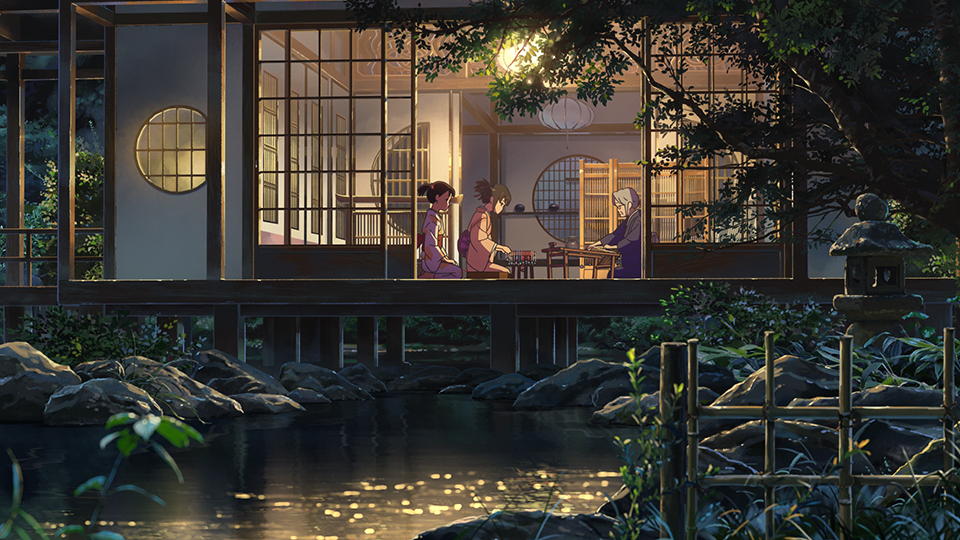
Então, o programa gera uma imagem auxiliar a partir de senos hiperbólicos. Esta imagem será utilizada como peso, posteriormente em uma multiplicação de imagens. Abaixo podemos ver a imagem gerada:
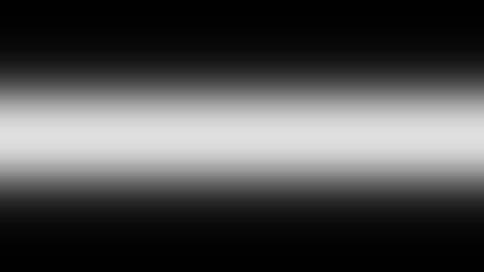
Partindo da imagem mostrada logo acima, o inverso da mesma é gerado a partir de uma subtração simples entre uma imagem que originalmente era completamente branca e ela:
Então, uma versão borrada da imagem original é gerada a partir de um borramento gaussiano. Utilizaremos esta imagem em conjunto com a imagem original para criar a sensação de foco:
Então, é feito uma multiplicação da imagem original pela imagem da máscara de foco:
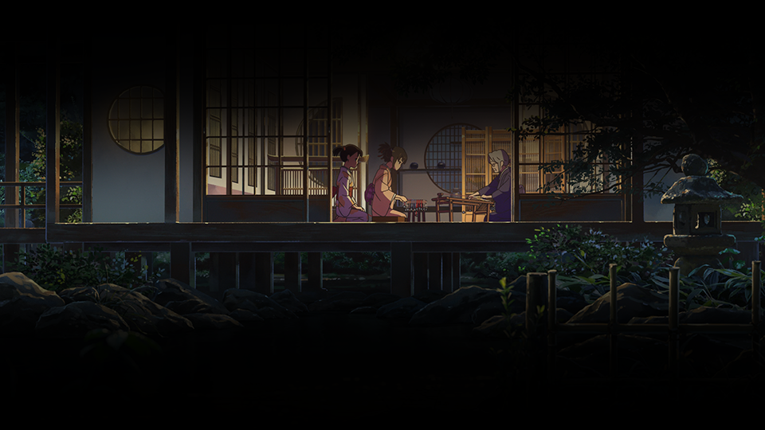
E uma multiplicação da imagem borrada pela imagem que possui o inverso da máscara de foco:
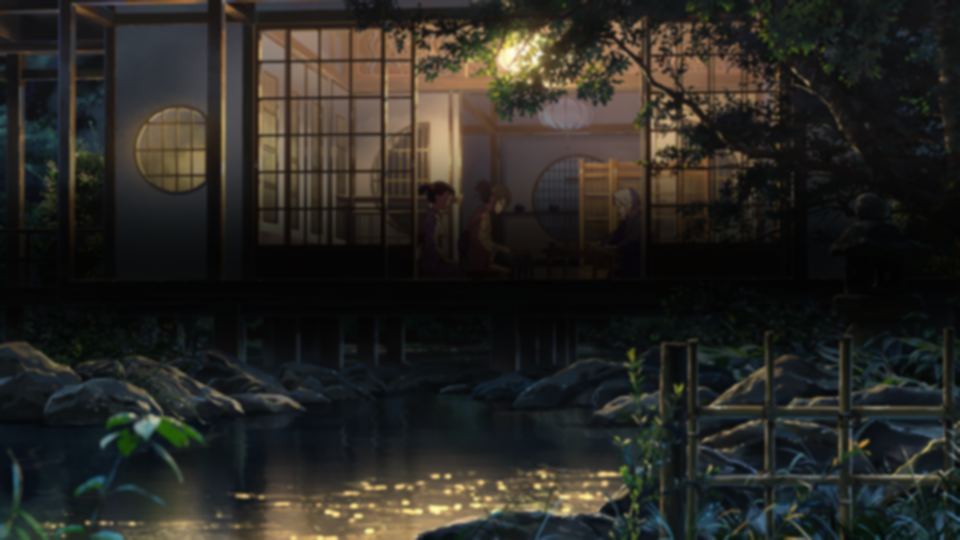
Agora, para chegar no resultado desejado, apenas somamos as duas imagens acima:
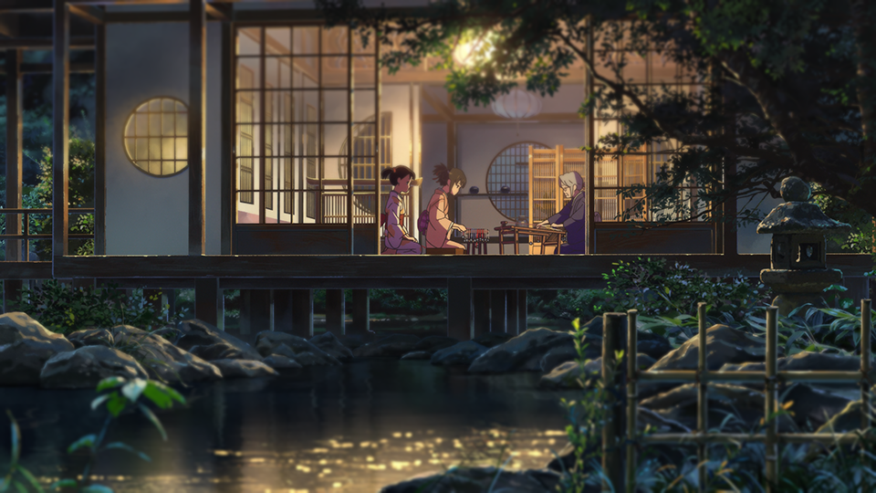
Podemos ver que quando comparada a imagem original, a imagem de saída possui suas extremidades verticais borradas. Entretanto, a mesma manteve a nitidez original no centro da imagem, gerando uma noção de foco. A animação abaixo facilita a vizualisação da diferença:
Podemos tamnbém, utilizar o mesmo princípio para dar a impressão de que um vídeo foi filmado a partir de uma miniatura ou maquete. Aplicando o efeito de tilt-shift e um efeito de frame-skip (isto é, fazer um borramento de uma porção do frame e pular alguns desses frames).
O programa deve então ser adaptado para que possa ser utilizado com vídeos. Podemos ver o código adaptado abaixo:
#include <iostream>
#include <opencv2/opencv.hpp>
#include <math.h>
using namespace cv;
using namespace std;
int main(int argvc, char** argv) {
VideoCapture video(argv[1]);
Mat img_in, img_discard;
int cols = video.get(CV_CAP_PROP_FRAME_WIDTH);
int rows = video.get(CV_CAP_PROP_FRAME_HEIGHT);
Mat img_blurred = Mat::zeros(rows, cols, CV_32FC3);
Mat img_out = Mat::zeros(rows, cols, CV_32FC3);
Mat img_focused = Mat::zeros(rows, cols, CV_32FC3);
Mat img_unfocused = Mat::zeros(rows, cols, CV_32FC3);
Mat mask_focus = Mat(rows, cols, CV_32FC3, Scalar(0, 0, 0));
Mat mask_unfocus = Mat(rows, cols, CV_32FC3, Scalar(1, 1, 1));
int frame_skip = 2; //Sets how many frames to skip between frames
int pass_frame = 0;
float unfocus_aux = 0.35; //Edit this to change how much of the original image will stay focused
int pos_i = unfocus_aux*rows;
int pos_f = rows - unfocus_aux*rows;
int decay = 60; //Edit this to change how fast it'll decay
Vec3f mask_function_value;
for (int i = 0; i < rows; i++) {
for (int j = 0; j < cols; j++) {
mask_function_value[0] = (tanh((float(i - pos_i) / decay)) - tanh((float(i - pos_f) / decay))) / 2;
mask_function_value[1] = (tanh((float(i - pos_i) / decay)) - tanh((float(i - pos_f) / decay))) / 2;
mask_function_value[2] = (tanh((float(i - pos_i) / decay)) - tanh((float(i - pos_f) / decay))) / 2;
mask_focus.at<Vec3f>(i, j) = mask_function_value;
}
}
mask_unfocus = mask_unfocus - mask_focus;
//This section shows the masks
imshow("focus mask", mask_focus);
imshow("unfocus mask", mask_unfocus);
while (true) {
if (pass_frame == 0) {
video >> img_in;
} else {
video >> img_discard;
}
img_in.convertTo(img_in, CV_32FC3);
GaussianBlur(img_in, img_blurred, Size(7, 7), 0, 0);
img_focused = img_in.mul(mask_focus);
img_unfocused = img_blurred.mul(mask_unfocus);
//This section only shows the blurred image
img_blurred.convertTo(img_blurred, CV_8UC3);
imshow("img_blurred", img_blurred);
//waitKey();
img_out = img_focused + img_unfocused;
img_out.convertTo(img_out, CV_8UC3);
//This section only shows the components of the final image
img_focused.convertTo(img_focused, CV_8UC3);
img_unfocused.convertTo(img_unfocused, CV_8UC3);
imshow("img_focused", img_focused);
imshow("img_unfocused", img_unfocused);
//waitKey();
if (pass_frame == 0) {
pass_frame = frame_skip;
}
else {
pass_frame -= 1;
}
imshow("output", img_out);
if (waitKey(30) >= 0) break;
}
return 0;
}
tiltshift_video.cpp
Como podemos ver, o esqueleto do código continua o mesmo. E todas as modificações feitas estão relacionadas á adquirir frames a partir de um vídeo e passar este frame ao resto do programa para que possa ser feito o tilt-shift e também o frame-skip.
Abaixo podemos ver o vídeo original utilizado:
Neste exemplo foi utilizado a mesma janela de foco do exemplo anterior, e ambas as máscaras são exatamente iguais. Para fazer o efeito de frame-skip, foi utilizado um valor frame_skip = 2 para que 2 frames sejam descartados a cada frame que é de fato utilizado e processado.
Abaixo podemos ver o vídeo resultante, como estamos jogando fora 2 frames a cada frame utilizado, o vídeo aparenta ser mais "lento" que o vídeo original:
Podemos entretanto aproximar o vídeo de saída da taxa de movimento do vídeo original simplesmente fazendo o encode do mesmo com uma persistência de frame menor: